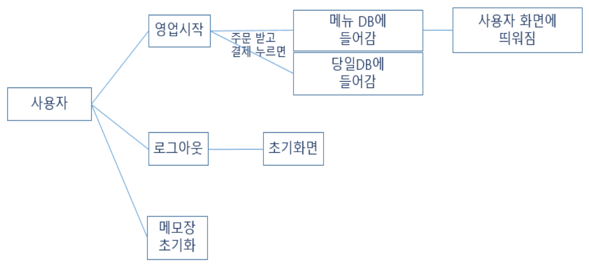
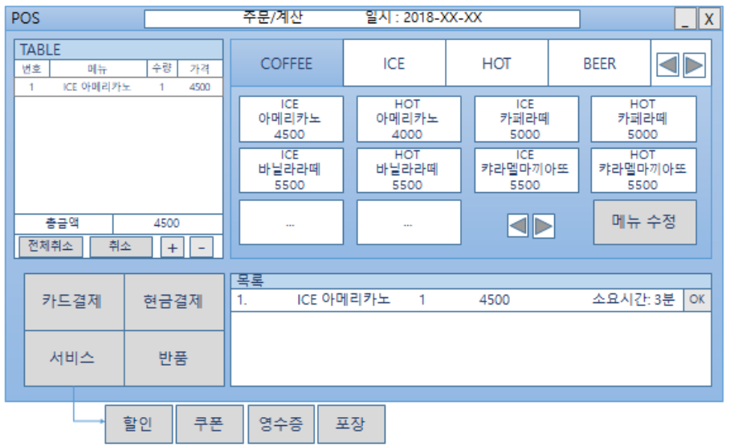
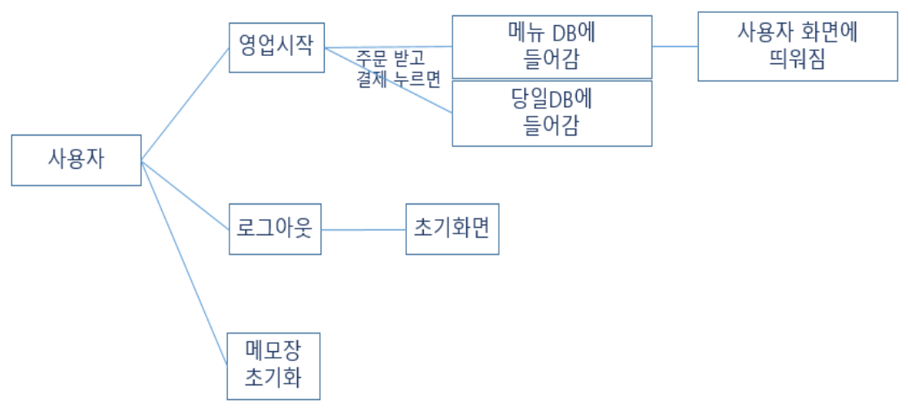
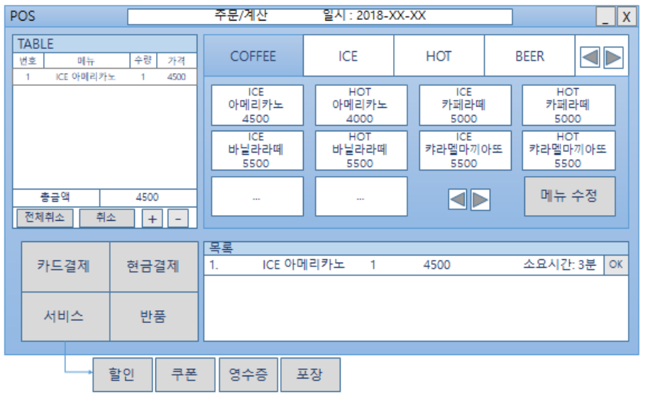

Aart (2018.07 ~ 2018.08 (인턴))
카페 포스 계산기(3인)
사용기술: Html5, Css3, Javascript, Node, Express, AWS, mySql
카페 포스 계산기(3인)
사용기술: Html5, Css3, Javascript, Node, Express, AWS, mySql
포스기의 선택된 음료와 금액을 계산하는 로직 구현 후, DB로 전달 (실시간 관리 기능포함)
웹 개발에 흥미를 가지게된 첫 웹 팀프로젝트였다. 인턴기간 동안 3명이서 작은 프로젝트였지만, AWS의 서버를 사서 직접 서버를 오픈하고
DB 설계를 직접 해보고, 프론트단과 백단이 서로 데이터를 주고 받으며, 팀원들과 합을 맞추고 서로 공유해나아가면서
짧은 시간동안 프로젝트를 무사히 맞칠 수 있었다. 학교에서 배울 수 없는 협업을 처음으로 배운 프로젝트로써 값진 경험이었다.
 


